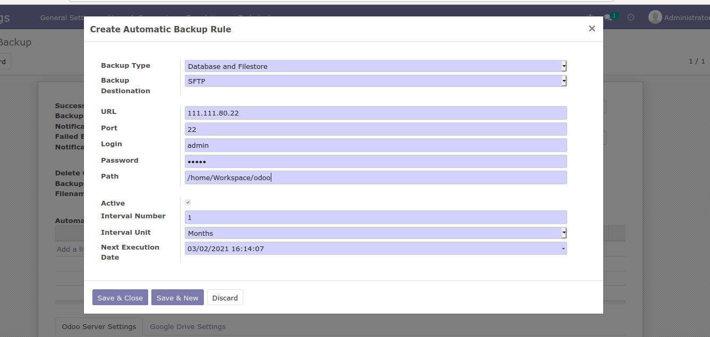

How to use this module
After installing this module, user can see the configuration from automatic backup menu.
Make sure you have installed python package pysftp and dropbox.
Here in the above image, user can enter the email to receive the notification for successful
and failed backup notification. Also possible to delete the old backups according to mentioned days.
If the backup need to be done in any local folder, backup destination can be selected accordingly.
Backup type can be database or database files. Folder path need to be provided to store the backups.
Backup done on remote server using FTP. Specify the relevant URL and the port number.

Similar to FTP, SFTP can be used to save the database files in the remote server.
Similar to FTP, SFTP can be used to save the database files in the remote server.
Backup database files using backup type Amazon S3
When backup type is Dropbox, use the authorization code URL to store the files.